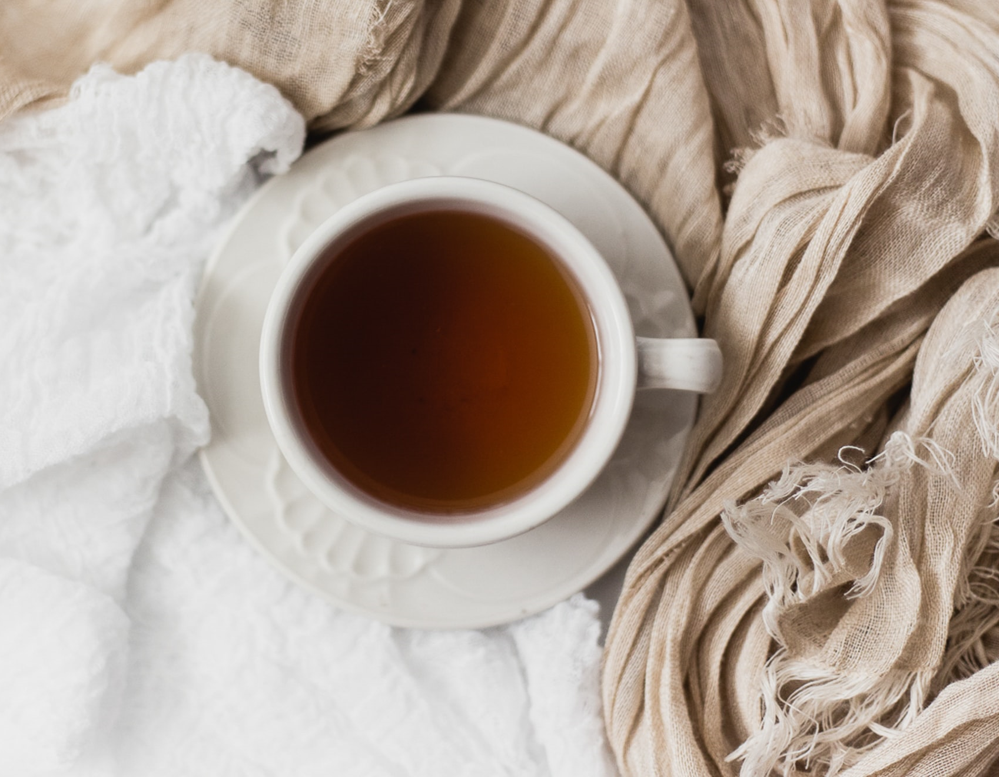

Living With Joy
August 7, 2022 | 30 comments
Life can feel challenging at times, but it doesn't have to be that way! There are many ways to find that spark in your life, a few of which we've explored in the past. This week we'll discover how you can find joy in the life you're already living.
CONTINUE READING